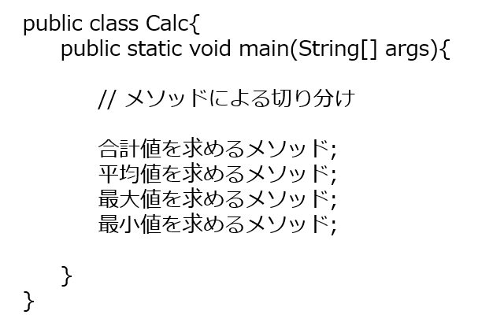

メソッド¶
メソッドとは¶
多くのプログラムでは１つのシステムを 複数の部品に分けて作ることができる仕組みを持っています。 メソッドとは、そうした部品の最小単位のことを言います 下の場合、計算を行うクラスCalcにおいてそれぞれのメソッドを分けて書くと明快になるはず。

(パワポのフォントの方が目にやさしそう(個人の意見)なので 貼ってみました。)
メソッドを利用するメリット¶
プログラムの見通しがよくなり、全体を把握できる
細かく書いているより、メインコード内では合計値を計算、平均値を計算と書いたほうが見やすい
機能単位に記述するため、修正範囲を限定できる
平均値にエラーがあれば、そこを直せばいいようにエラーの場所を見つけやすい
同じ処理を１つのメソッドにまとめることで作業効率が向上する
複数人で作業する場合、個別にコードをかける
同じ処理をする場合、使いまわしができる
コード量を減らせる
メソッドを使う場合¶
使う人がある入力するとほしい結果が出力として帰ってくる。 この時、使う人はどんな処理をしたのかは全く知らなくて よい状況にしなければなりません。
例でいうと、ATMいって、カード/通帳を入れる、パスワードを入力、引き出したい金額を入力するだけでお金を引き出せます。 この時の処理を分けると、
入力：カードか通帳で処理が多少変わる
パスワードを入力：パスワードが正しいかデータベースに問い合わせる。
引き出したい金額を入力：額が足りているか確認し、足りている場合はその分のお金を出して、データベースを書き換える。 このように裏ではいろんな処理をしているにもかかわらず自分たちは必要情報だけの入力で目的が達成できました。
引数と返り値¶
引数とは数式(メソッド) f(x) = ax における入力値 x のことです。実際に、最大値を求めるプログラムについて練習問題で扱いましたが、比較する値が2つ必要でした。
このプログラムをメソッドにするときは、これらを引数にします。 また、返り値はメソッドから返す値のことで最大値を求めるプログラムにおける結果つまり、最大値のことです。
int num = fx_(4);
// f(x) = axのプログラム
public static int fx_(int x){
int a = 5; // aのままだとエラーが出るのでとりあえず5、aに直いれしてもいい
return a*x;
}
このメソッドにおいて引数は int x 、返り値は int a*x となります。
返り値の型はどこで決めたん？？？
→ public static 「int」 fx_ と書いていましたがここで型が決まります。
この時注意すべきことは代入先 num とメソッド fx_ の型が一致する必要があります。
引数は複数設定可能ですが、返り値は1つなので気を付けてください。
複数の値を返したいなという時、配列のアドレス(1つ)を返えせばいい。配列にすれば、連番になっているので芋づる式に持ち出せます。
値を返す必要がないなという時は、void型を使いましょう。
オーバーロード¶
同じ名前のメソッドを定義することをオーバーロード(多重定義) と呼びます。名前の通り、ある条件下であれば、1つのメソッド名を多重に定義することができます。
ある条件とは？¶
メソッドを使う時に違いが分かればいい。 つまり引数を何かしら変える。 例えば、引数の数や型などです。 (引数の型が異なる場合における引数の順番を変える場合も。)
(例)
public static void add(){
処理1
}
public static int adder(int num1, int num2){
int add = num1 + num2;
return add // int型を返す
}
public static double adder(double num1, double num2){
double add = num1 + num2;
return add // double型を返す
}
オーバーロード考えてみよう¶
コンピュータの気持ちになってみましょう。例えば、
// システムプログラム_A
System(String str);
// システムプログラム_B
System(String str, int num);
とあったとき、入力が 文字列strだけ の時はどちらを実行しますか？
次に、
// システムプログラム_A
System(String str, int num);
// システムプログラム_B
System(String str, int num);
の場合、入力が 文字列strと整数num であった場合、どちらで実行しますか？
前者の場合は、入力が 文字列のstrのみ である System(String str) を
実行すると思います。
後者の場合、どちらを開けばいいのか分からないかと思います。 実際にメソッドの中の処理は違っていたとしても呼び出す側は これしか見えていないため判別がつきません。 こうしたプログラムをJavaは許さないため、エラーになります。 また、返り値が違っていたとしても、実行する際に必要な項目は 引数であるためエラーです。
この時、はたから見て見分けられるようなメソッドをオーバーロードといいます。